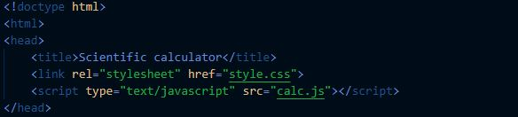
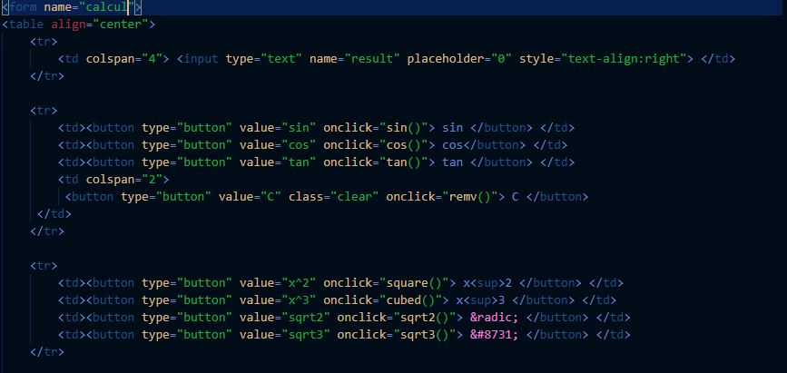
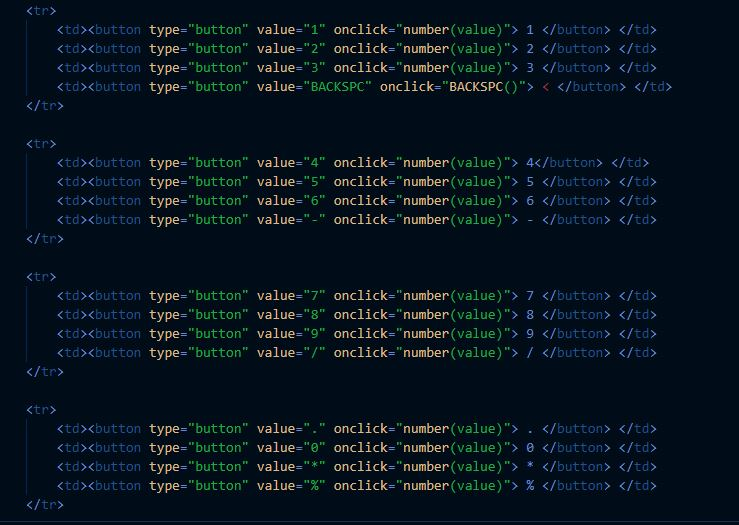

Documentation of Calc.Html
In HEAD Three Things in Defined
NO 1 ::
Title as Shown in Figure
NO 2 ::
Link Css File With Html Using LINK TAG
NO 3 ::
Connect javascript file with Css

IN HTML BODY I AM USING FORM TAG AND TABLE TAG AS SHOWN IN FIGURE
NO 1 ::
FORM TAG is used for creating a form for user input. A form can contain textfields, checkboxes, radio-buttons and more. Forms are used to pass user-data to a specified URL
NO 2 ::
TABLE TAG :: Main Table Tag
Th :: It defines a header cell in a table.
Td :: It defines a cell in a table.
NO 3 ::
Input TAG :: HTML element is used to create interactive controls for web-based forms in order to accept data from the user; a wide variety of types of input data and control widgets are available, depending on the device and user agent.

NO 4 ::
Creating Button of Calculator
As you might have already guessed, we would need to create “buttons” for inputting values and a screen for displaying these values.
Well, basically, that’s it!
But in fancier terms, these are the components we need:
· A display area for displaying operators, operands and solutions.
· Buttons for inputting values to the display screen
Visually, a calculator is a table enclosed in a container. And as you should already know tables are made of rows and columns with cells to contain table data.

Link Pages Using a Tag
The tag defines a hyperlink, which is used to link from one page to another.
The most important attribute of the element is the href attribute, which indicates the link's destination.
By default, links will appear as follows in all browsers:
An unvisited link is underlined and blue
A visited link is underlined and purple
An active link is underlined and red